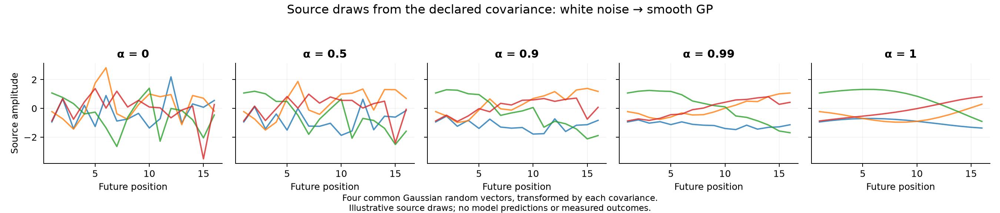
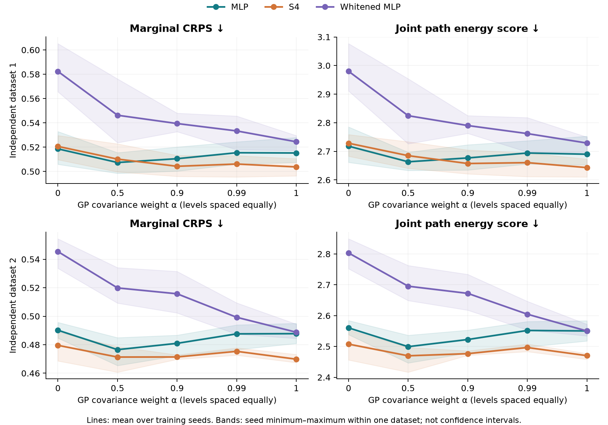
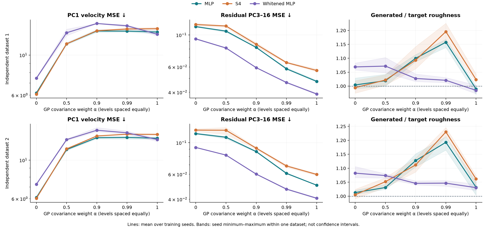
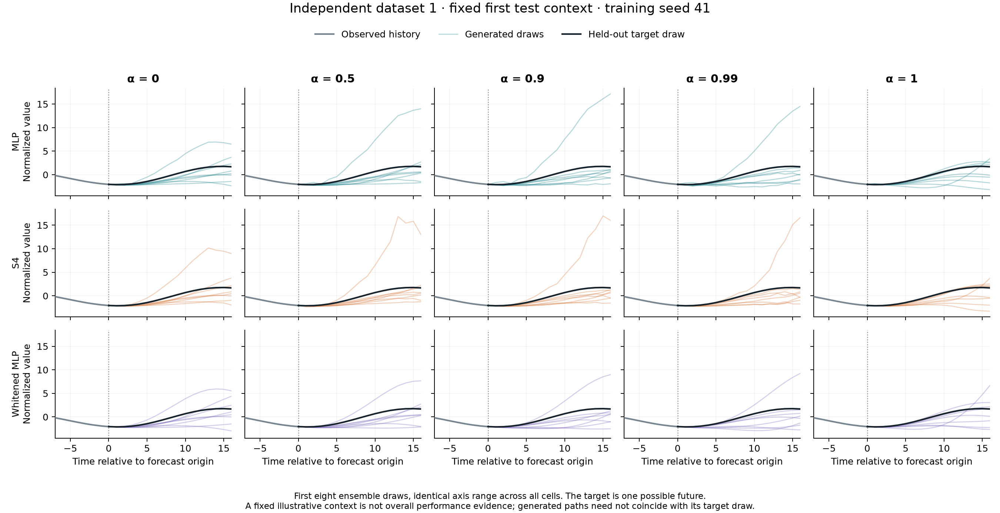
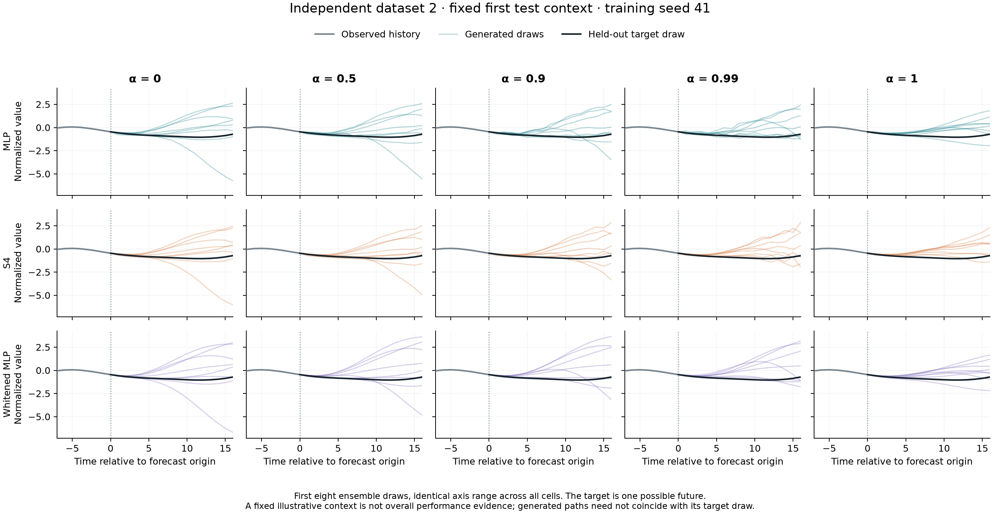
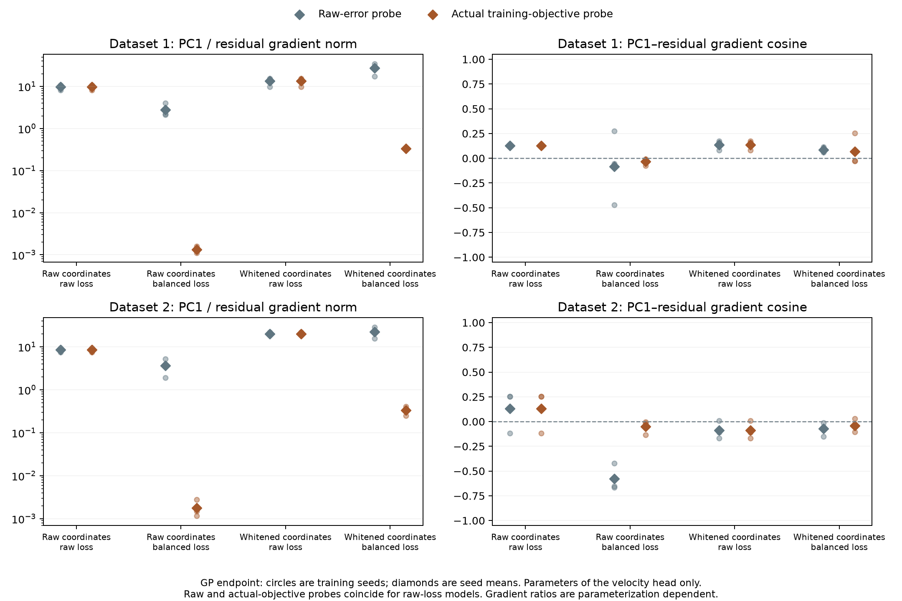
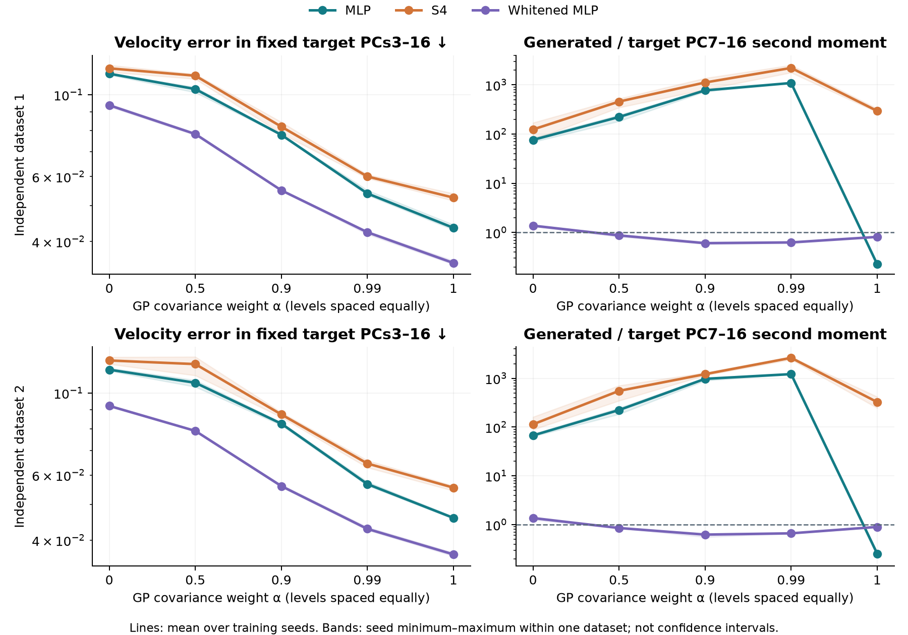
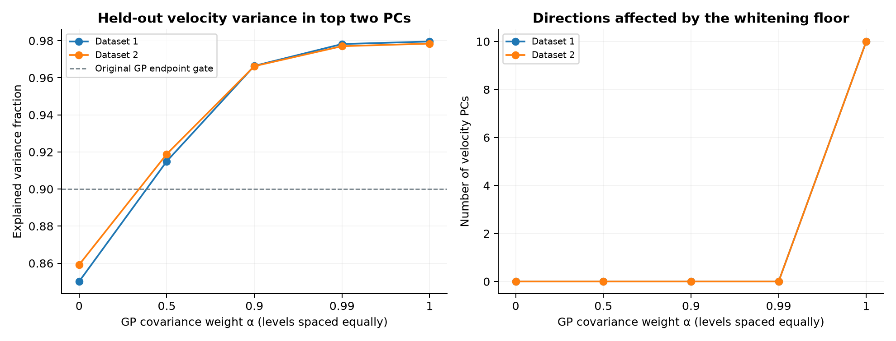
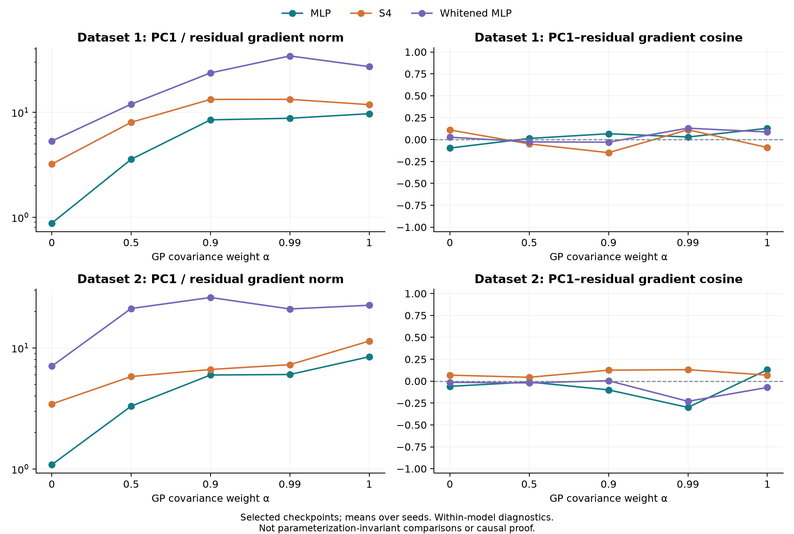
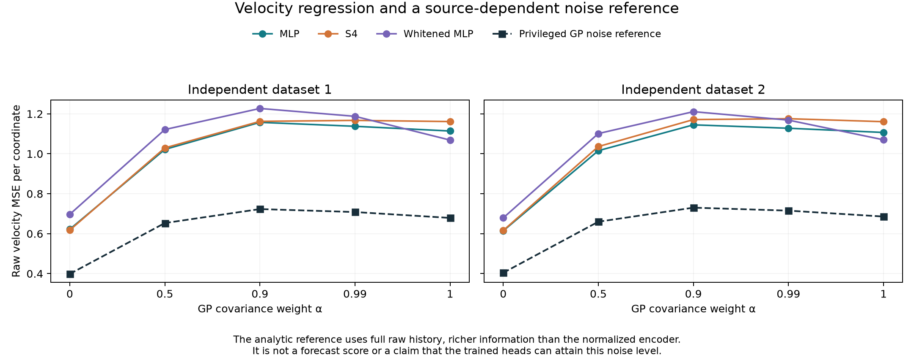

Flow-matching stress test · measured follow-up
How much does source smoothness change the head comparison?
A controlled path from white noise to a smooth Gaussian-process source, with the original synthetic forecasting geometry restored.
102completed MPS fits
5source covariance weights
2 × 3independent datasets × training seeds
2 × 2coordinate / loss control at GP endpoint
What the measured results show
- The 50:50 GP–white covariance mixture helps ordinary MLP in both datasets: CRPS is 0.5074 / 0.4765, versus 0.5186 / 0.4902 for white noise and 0.5152 / 0.4878 for pure GP. These values are dataset 1 / dataset 2. This observed comparison does not establish an optimal mixing weight.
- A 99% GP covariance is not equivalent to pure GP for small-variance output directions. MLP’s generated/target PC7–16 second-moment ratio is 1090 / 1221 at α=0.99, versus 0.227 / 0.254 at pure GP and 76.1 / 67.5 at white noise. The target energy in this tail is tiny: these large ratios do not mean the whole trajectory has thousands of times too much variance. Aggregate CRPS alone largely hides this change.
- S4 gives lower GP-source forecast CRPS (0.5038 / 0.4699) than MLP (0.5152 / 0.4878). But it has lower raw residual velocity error in 0/2 datasets and roughness closer to target in 0/2. The original claim that the unstructured head uniquely fails on residual structure is therefore not supported by these declared diagnostics; the modest forecast-score advantage is a different result.
- Full whitening reduces MLP’s GP-source residual velocity error from 0.04761 / 0.05026 to 0.03891 / 0.04068, while CRPS changes from 0.5152 / 0.4878 to 0.5244 / 0.4888. Better small-direction regression does not automatically give a better probabilistic forecast. The coordinate/loss controls below identify which parts of whitening help and which hurt.
These are prespecified comparisons of dataset-specific three-seed means. Percent differences describe this experiment, without a population significance claim or selection of an optimal α.
Does the mixture change S4’s gap to MLP?
| α | Dataset 1: shift in CRPS gap | Dataset 2: shift in CRPS gap |
|---|
| 0.5 | +0.00077 | +0.00539 |
| 0.9 | -0.00829 | +0.00102 |
| 0.99 | -0.01133 | -0.00167 |
| 1 | -0.01350 | -0.00733 |
Each value is [(S4 − MLP) at α] − [(S4 − MLP) at white noise], paired within training seed and then averaged. A negative shift favors S4 relative to MLP; it does not necessarily mean S4 has lower CRPS. These are mean differences, not significance tests.
One source family, five levels of correlation
Cα = (1 − α) I + α CGP, α ∈ {0, 0.5, 0.9, 0.99, 1}
At α = 0 the source is white noise; at α = 1 it is the matched-kernel RBF Gaussian process. Intermediate values keep unit marginal variance while adding temporal correlation. Each source draw is Gaussian with this covariance. Its marginal variance is exactly one at every α; the GP endpoint divides the original kernel by 1.000001 to keep that variance fixed. This is a covariance mixture, not a random choice between two kinds of trajectory.
The target remains a smooth univariate GP, with lookback 32 and horizon 16. Context-only Sundial instance normalization is applied as in the original assignment. MLP and S4 use the same tiny encoder architecture and matched initial encoder weights; their encoders then train separately. The source is independent of the target conditional on the context. “Matched kernel” does not mean its covariance equals that of the normalized target.

| α | Expected source roughness | Dataset 1: E₂ | Floored PCs | Dataset 2: E₂ | Floored PCs |
|---|
| 0 | 1.1284 | 0.8502 | 0 | 0.8592 | 0 |
| 0.5 | 0.8010 | 0.9150 | 0 | 0.9189 | 0 |
| 0.9 | 0.3691 | 0.9664 | 0 | 0.9663 | 0 |
| 0.99 | 0.1501 | 0.9782 | 0 | 0.9770 | 0 |
| 1 | 0.0995 | 0.9796 | 10 | 0.9784 | 10 |
E₂ is validation velocity variance in the first two training PCs. Expected source roughness is computed analytically from adjacent Gaussian differences. Normalized target validation roughness: dataset 1: 0.1896, dataset 2: 0.2005. Source covariance is fixed in normalized coordinates and need not match the normalized target covariance.
Results by independent dataset
Each entry is the mean of 3 training seeds within one dataset. CRPS uses 128 held-out contexts with 32 forecasts each; raw velocity errors use all 8,192 test windows, and the original roughness diagnostic uses 1,024 generated paths. Lower CRPS and velocity MSE are better; roughness should be near 1. The two dataset columns are deliberately kept separate. There are two independent training-data draws, not six.
CRPS
| α | Head | Dataset 1 | Dataset 2 |
|---|
| 0 | MLP | 0.5186 | 0.4902 |
| 0 | S4 | 0.5207 | 0.4796 |
| 0 | Whitened MLP | 0.5824 | 0.5454 |
| 0.5 | MLP | 0.5074 | 0.4765 |
| 0.5 | S4 | 0.5102 | 0.4713 |
| 0.5 | Whitened MLP | 0.5463 | 0.5199 |
| 0.9 | MLP | 0.5105 | 0.481 |
| 0.9 | S4 | 0.5043 | 0.4714 |
| 0.9 | Whitened MLP | 0.5394 | 0.5158 |
| 0.99 | MLP | 0.5154 | 0.4876 |
| 0.99 | S4 | 0.5061 | 0.4754 |
| 0.99 | Whitened MLP | 0.5334 | 0.4993 |
| 1 | MLP | 0.5152 | 0.4878 |
| 1 | S4 | 0.5038 | 0.4699 |
| 1 | Whitened MLP | 0.5244 | 0.4888 |
Residual velocity MSE
| α | Head | Dataset 1 | Dataset 2 |
|---|
| 0 | MLP | 0.1144 | 0.116 |
| 0 | S4 | 0.1183 | 0.1228 |
| 0 | Whitened MLP | 0.09404 | 0.09265 |
| 0.5 | MLP | 0.1064 | 0.1093 |
| 0.5 | S4 | 0.1155 | 0.1225 |
| 0.5 | Whitened MLP | 0.08124 | 0.08189 |
| 0.9 | MLP | 0.08196 | 0.08665 |
| 0.9 | S4 | 0.08615 | 0.09159 |
| 0.9 | Whitened MLP | 0.05931 | 0.06015 |
| 0.99 | MLP | 0.05826 | 0.06088 |
| 0.99 | S4 | 0.06435 | 0.06866 |
| 0.99 | Whitened MLP | 0.04681 | 0.04717 |
| 1 | MLP | 0.04761 | 0.05026 |
| 1 | S4 | 0.05671 | 0.05984 |
| 1 | Whitened MLP | 0.03891 | 0.04068 |
Roughness ratio
| α | Head | Dataset 1 | Dataset 2 |
|---|
| 0 | MLP | 1.004 | 1.013 |
| 0 | S4 | 0.9943 | 1.005 |
| 0 | Whitened MLP | 1.069 | 1.082 |
| 0.5 | MLP | 1.019 | 1.031 |
| 0.5 | S4 | 1.022 | 1.052 |
| 0.5 | Whitened MLP | 1.072 | 1.074 |
| 0.9 | MLP | 1.1 | 1.127 |
| 0.9 | S4 | 1.093 | 1.112 |
| 0.9 | Whitened MLP | 1.027 | 1.046 |
| 0.99 | MLP | 1.158 | 1.193 |
| 0.99 | S4 | 1.196 | 1.23 |
| 0.99 | Whitened MLP | 1.021 | 1.047 |
| 1 | MLP | 0.9894 | 1.032 |
| 1 | S4 | 1.023 | 1.062 |
| 1 | Whitened MLP | 0.9846 | 1.031 |


Inspect fixed forecast examples for both datasets


What does whitening change?
The GP endpoint crosses two choices: raw versus whitened model coordinates, and raw versus variance-balanced velocity loss. This separates the effect of coordinates from the effect of weighting small-variance errors. All reported errors and generated trajectories are mapped back to the original observation coordinates.
Changing only the coordinates improves CRPS in both datasets: 0.5152 / 0.4878 → 0.5045 / 0.4812. Changing only the loss sharply worsens it to 1.3830 / 1.1631. The full whitening intervention gives 0.5244 / 0.4888: its lower residual error comes with slightly worse forecast CRPS than ordinary MLP. Coordinates and error weighting therefore have distinct effects under this fixed training budget.
| Model / objective | Dataset | CRPS ↓ | PC1 MSE ↓ | Residual MSE ↓ | Roughness ≈ 1 |
|---|
| MLP / balanced loss | 1 | 1.383 | 82.22 | 0.04535 | 0.767 |
| MLP / balanced loss | 2 | 1.163 | 82.8 | 0.04634 | 0.808 |
| MLP | 1 | 0.5152 | 13.42 | 0.04761 | 0.9894 |
| MLP | 2 | 0.4878 | 13.38 | 0.05026 | 1.032 |
| Whitened MLP | 1 | 0.5244 | 13.04 | 0.03891 | 0.9846 |
| Whitened MLP | 2 | 0.4888 | 13.14 | 0.04068 | 1.031 |
| Whitened MLP / raw loss | 1 | 0.5045 | 12.76 | 0.04494 | 1.035 |
| Whitened MLP / raw loss | 2 | 0.4812 | 12.8 | 0.04731 | 1.092 |
“Whitened MLP” uses balanced loss; “MLP / balanced loss” changes only the loss; “Whitened MLP / raw loss” changes only the coordinates. Full-dimensional whitening uses a declared eigenvalue floor, without discarding principal components.
Inspect gradients of the raw error and the actual training objective

The same selected checkpoint is probed with raw error and its actual training objective. For balanced-loss heads these are different decompositions; the raw-loss heads serve as equality controls.Inspect geometry, raw-loss gradients and the privileged noise reference

The target PCA is fixed across sources within each dataset. PC7–16 second moments use the shared training-target mean and do not use a variance floor; this measures marginal geometry, not conditional calibration.
Training PCA evaluated on independent validation draws. Intermediate mixtures are reported without requiring the endpoint rank-two gate.
Raw-loss parameter-gradient diagnostics at selected checkpoints. Balanced-loss models are also probed using raw loss, which differs from their training objective.
The prior changes the stochastic velocity-regression problem itself. The reference conditions on full raw history, stronger information than the model receives. The saved decomposition retains its signed cross term; subtracting this reference from model MSE is not an unbiased measure of approximation error.How to read the evidence
- Within one source, paired head contrasts use identical datasets, optimization seeds and evaluation draws. Source-by-head interactions compare how these paired gaps change from white noise.
- Velocity PCA is source-specific. Across α, both the regression target and its PC axes change. Common target-PCA diagnostics and probabilistic forecast scores provide complementary comparisons in a shared output space.
- The source-sweep gradient plot measures raw-observation-MSE gradients, including for models trained with balanced loss. A separate GP-endpoint plot compares this raw-error probe with the gradient of each model’s actual training objective. PC1, PC2 and residual losses use the same batch-size × horizon denominator, so their gradients sum to the raw-MSE gradient. Encoder parameters are excluded. Gradient norms are diagnostic measurements in each model’s parameterization. A large PC1/residual ratio does not by itself prove gradient competition causes forecast failure, and norms from different architectures are not invariant quantities.
- The original literal rule is retained: residual/PC1 error and generated/target roughness must both lie in [0.8, 1.2]. 0/102 runs pass. The rule can reject a model merely because residual error is much smaller than PC1 error; it is not a sufficient forecast-quality criterion.
- 86/102 selected checkpoints are at the final update. These are fixed-budget comparisons, not a proof of convergence or an optimal architecture ranking. The additional study is exploratory and does not replace the original assignment results.
- Doubling Euler steps from 64 to 128 on the first eight contexts of seed 41 changes mean CRPS by at most 0.00169 across checked cells. This is a limited solver sensitivity check, not a global convergence test.
Software-smoke checks used dataset seed 137041, so their 128 test windows overlap the beginning of main dataset 1. The complete main configuration was fixed before those checks; no hyperparameters, source weights, schedule or numerical code were changed in response to smoke outcomes. Model checkpoints are selected only on validation data.
Uncertainty is shown as training-seed variation within each dataset and agreement or disagreement between the two datasets. No population confidence interval is claimed from two data draws. All planned cells, including failures, remain in the report.
Reproducible results
Every fit · Paired differences and interactions · Complete machine-readable summary
The analyzer checks completion and hashes, recomputes saved-array metrics, and preserves dataset-specific means. For the independent execution audit and the exact fixed protocol, see the project’s results/prior-mixture directory. Report generated from saved numerical results; no outcome is inferred from schematic curves.